An exhaustive analysis of location design — how architecture, lighting, and environmental storytelling shape the narrative of Love and Deepspace.
In Love and Deepspace, locations are not mere backdrops. They are active participants in storytelling — each environment carries its own emotional weight, its own visual language, its own secrets. The game's designers have created a world where you can understand a character's internal state simply by looking at where they stand, how light falls on their face, and what surrounds them.
This guide will walk through every major location in Love and Deepspace, analyzing the design choices that make each space unforgettable. From the gleaming towers of Tianxing City to the rain-soaked alleys of N109 Zone, from the sterile corridors of Gaia Research Center to the intimate warmth of MC's room — each place tells a story that words alone cannot convey.
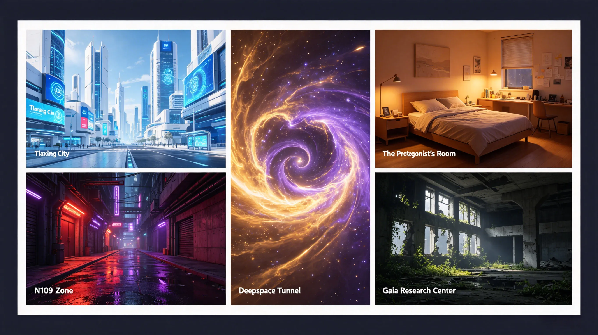
Figure 1: A visual journey through the worlds of Deepspace — Tianxing City, N109 Zone, Deepspace Tunnel, Gaia Center, and more.
Image description: A five-panel collage showing the distinct visual identity of each major location, arranged from brightest (Tianxing) to darkest (N109).
Tianxing City is the first major location players encounter after the prologue. It is presented as a utopia — a "miracle of the core energy era" — but its visual language betrays a darker truth. Every gleaming surface, every holographic advertisement, every perfectly maintained street is a mask hiding something rotten.
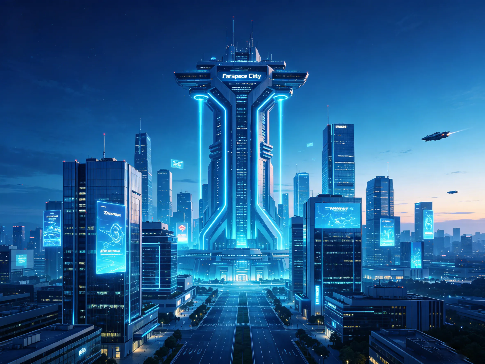
The dominant colors of Tianxing are cool — blues, cyans, whites. These colors psychologically signal distance, professionalism, and control. Unlike the warm reds of N109, Tianxing does not invite intimacy. It impresses, but it does not embrace.
The gold accents (on the Fleet headquarters, on official buildings) are the only warm elements — but gold is the color of value, not warmth. It says "you are looking at something expensive," not "you are welcome here."
Tianxing City's layout follows a radial-concentric pattern — the Farspace Fleet headquarters at the center, with residential and commercial zones radiating outward. This is not accidental. Radial city planning is historically associated with authoritarian power structures (think Haussmann's Paris, or Albert Speer's plans for Berlin). The message is clear: everything in Tianxing exists in relation to the Fleet. There is no "outside."
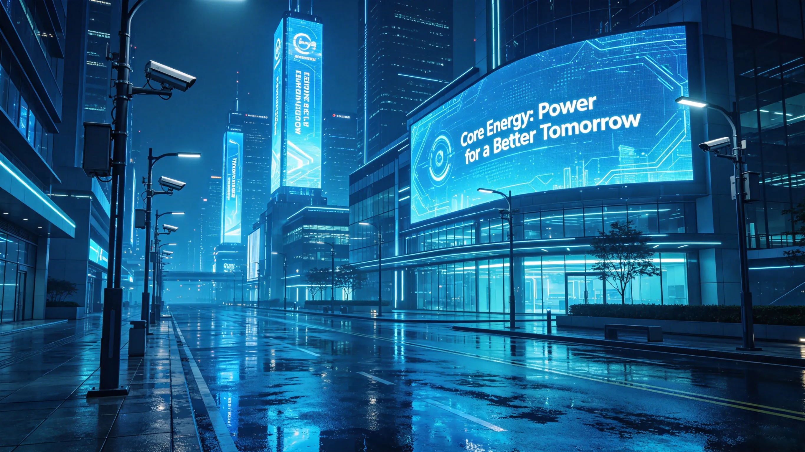
Figure 2: Street-level view of Tianxing — clean, cold, and watched. The holographic advertisements never stop.
Image description: Wide shot of a Tianxing street, blue-tinted, holographic ads floating above, visible surveillance cameras on every corner, no pedestrians visible, oppressive cleanliness.
The Fleet headquarters is the architectural heart of Tianxing — a towering structure of glass, steel, and blue energy conduits. Its design language is brutalist-modernist: massive, imposing, unadorned. It does not welcome you; it overwhelms you.
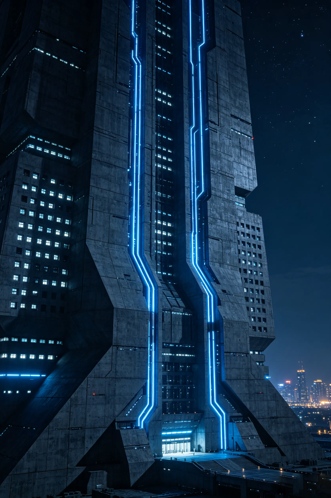
Image descriptions: Left — exterior shot of the monolithic Fleet HQ at night, blue energy pulsing up its sides. Right — interior corridor, impossibly long, harsh fluorescent lighting, no windows.
The Fleet HQ interior is designed to disorient. Endless corridors, identical doors, no natural light. Ceilings are high (creating insignificance), floors are polished to a mirror shine (creating disorientation). The few windows face inward toward central atriums, never outward. You cannot see the sky from inside the Fleet HQ. This is a building that wants you to forget there is a world outside its walls.
Xia Yizhou's office is the only space with a window — and it faces the city, not the sky. He can watch over Tianxing, but he cannot see the stars. A deliberate visual metaphor for his position: power, but no freedom.
The hospital where Zayne works is a study in sterile aesthetic as emotional armor. Every surface is white or pale gray. Lighting is fluorescent — harsh, flattening, revealing. There are no decorative elements, no personal touches in public areas.
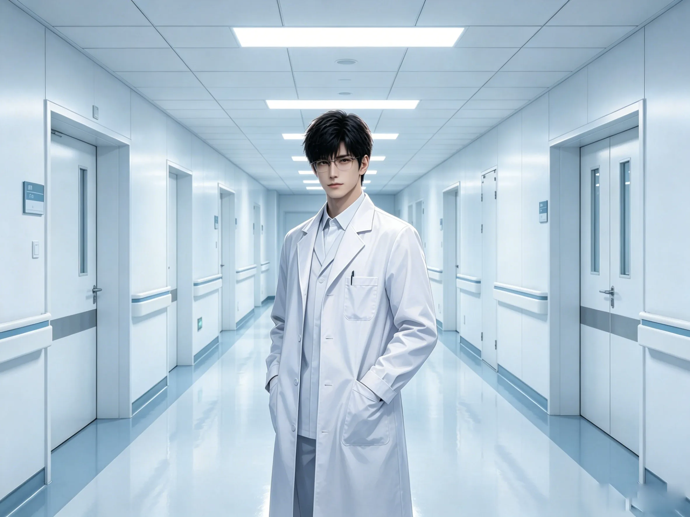
Figure 3: The hospital — cold, clinical, but Zayne's presence warms it slightly.
Image description: Hospital corridor, white walls, fluorescent lights, Zayne standing in his white coat, the only warm element in a cold composition.
Zayne's personal office is different. Here, there are books. A kettle for tea. A small plant on the windowsill. These small personal touches transform the space from clinical to intimate. The contrast between the sterile hospital and Zayne's office tells you everything about his character: he performs professionalism in public, but in private, he allows himself small comforts. The only times MC sees his office are during moments of vulnerability — when he is being Zayne, not "Dr. Zayne."
If Tianxing City is a gilded cage, N109 Zone is a beautiful abyss. It is everything Tianxing is not: warm-colored, chaotic, dangerous, and alive. The visual language of N109 is cyberpunk distilled — but with a unique melancholic undertone that separates it from genre clichés.
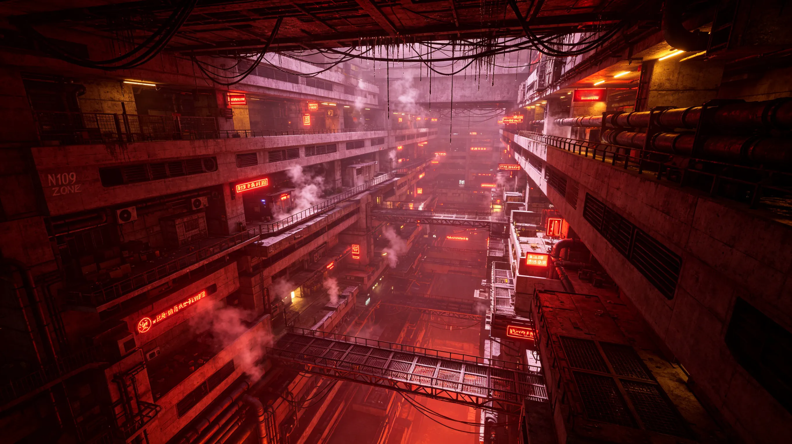
Unlike Tianxing's cool blues, N109 is warm — but warmth here signals danger, not comfort. Red lights in cyberpunk aesthetics traditionally indicate danger, vice, and passion. The purple neon suggests mystery and transformation. The amber glow of streetlights creates pools of false safety in darkness.
The sky in N109 is never visible — only the undersides of upper levels, pipes, and cables. You cannot see the stars here either, but for different reasons than Tianxing. In Tianxing, the sky is hidden by architecture designed to control. In N109, the sky is hidden by neglect — no one has bothered to build a ceiling you can see through.
N109 Zone is built from the bones of an older city — brutalist concrete structures now overlaid with neon, holograms, and makeshift additions. The juxtaposition is key: grandiose decay. These buildings were once important. Now they are slums, but the scale remains. The ceilings are still high, the corridors still wide — but they are filled with debris, market stalls, and people trying to survive.
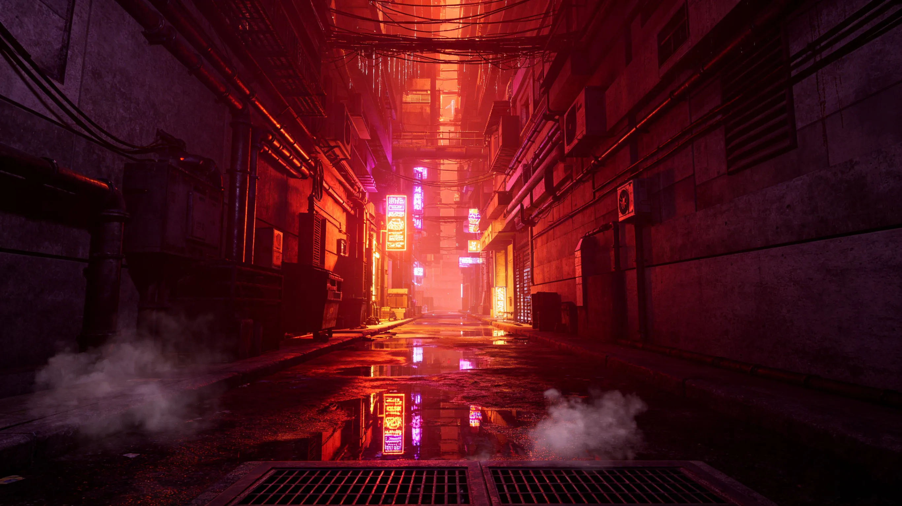
Figure 4: A typical N109 street — red neon reflecting on wet ground, brutalist concrete overhead, a lone figure in the distance.
Image description: First-person perspective of an N109 alley, red and purple neon signs, steam rising from a grate, puddles reflecting light, oppressive verticality.
Sylus's throne room is the most visually striking location in N109. It subverts expectations: you expect a cyberpunk warlord's lair to be dark, cramped, violent. Instead, Sylus's throne room is open, cathedral-like, and eerily peaceful. High ceilings, warm amber lighting, a throne that is almost understated. The room says: I have nothing to prove. I am already king.
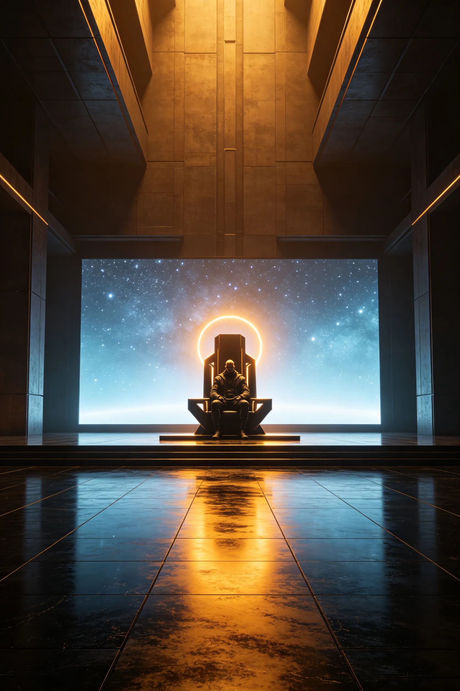
Image description: Sylus sitting on his throne, amber backlight creating a halo, the room vast and empty, a false starfield on a massive screen behind him.
Sylus's throne room tells you everything about him: he is powerful (the scale), but he is also lonely (the emptiness). He has built a false sky to look at because he cannot see the real one. The throne is not comfortable — it is a statement. The room is beautiful but cold, impressive but sad. This is not the lair of a villain; it is the cage of a man who has everything and nothing.
Beneath N109 Zone are EVER's hidden laboratories — the true heart of darkness in Love and Deepspace. These spaces are a complete aesthetic departure from the zone above: sterile white, clinical lighting, containment pods. The contrast is jarring. Above: warm, chaotic, alive. Below: cold, ordered, dead.
Figure 5: The hidden laboratory — where Core Source Disease is weaponized, where humans become monsters.
Image description: Sterile white laboratory, rows of cylindrical containment pods with glowing blue interiors, medical equipment, a sense of horror beneath cleanliness.
The laboratories are not dirty or chaotic. They are too clean. This is a specific horror aesthetic: evil is not always dark and bloody. Sometimes it is bright, white, and organized. The laboratories look like hospitals — but they are not places of healing. The blue glow from the containment pods is the same blue as Tianxing's core energy conduits, the same blue as the Fleet's technology. The visual connection is intentional: the laboratories, the Fleet, and Tianxing are all part of the same system. EVER's cruelty is not an aberration — it is the logical conclusion of Tianxing's ideology.
The Deepspace Tunnel is the most visually spectacular location in Love and Deepspace — and the most narratively significant. It is the threshold between Earth and the unknown, between safety and danger, between ordinary life and the extraordinary. Every major story beat involves crossing through the tunnel, and its visual design shifts depending on the emotional context.
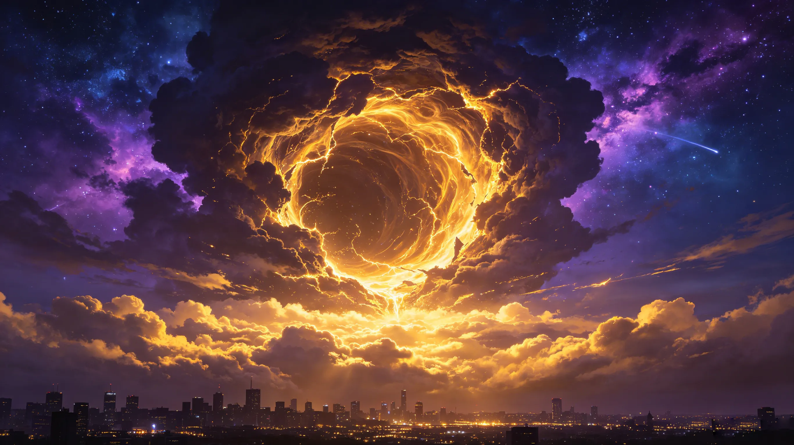
Figure 6: The Deepspace Tunnel as seen from Earth — a rift in the sky, glowing gold, both beautiful and terrifying.
Image description: Night sky over Linkon City, a massive golden rift tearing through the clouds, energy swirling at its edges, a silhouette of the city below.
The tunnel's interior is a masterpiece of cosmic horror aesthetics. The colors are otherworldly — golds, purples, deep blues — but the shapes are what create unease. There are no straight lines inside the tunnel. Everything curves, swirls, folds in on itself. The architecture (if it can be called that) is non-Euclidean. Your brain cannot fully parse what it is seeing, and that is the point. The tunnel is alien in the most literal sense.
Image description: First-person view inside the tunnel, swirling gold and purple energy, organic curved walls, no visible floor or ceiling, a point of light in the distance.
The moment Wanderers emerge from the tunnel is a masterclass in visual storytelling. The tunnel tears open — not like a door opening, but like a wound. Golden light bleeds out, and from the light, shadows take form. The Wanderers are silhouettes at first, only resolving into monstrous shapes as they approach. The sequence never shows you too much too quickly. Fear of the unknown is more powerful than fear of the known.
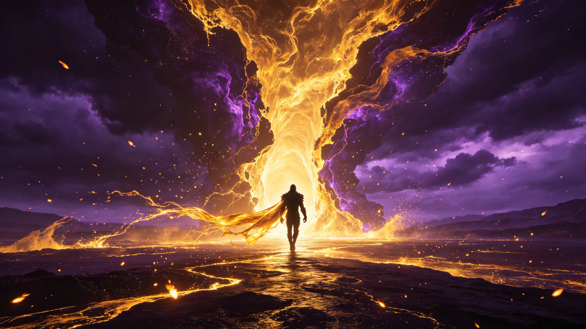
Figure 7: The moment of emergence — light bleeding from a wound in reality, a silhouette taking shape.
Image description: A massive golden rift, a dark humanoid silhouette stepping out of the light, energy trailing from its form, a sense of scale impossible to determine.
Every time a character enters the tunnel, they are changed. It is a liminal space — a threshold between states of being. Xavier has crossed it more times than anyone, and it has worn him down. MC crosses it and discovers new aspects of her power. Sylus rules the zone nearest to the tunnel's exit. The tunnel is not just a location; it is a force in the narrative, reshaping everyone who comes near it.
Gaia Research Center is the birthplace of the Ether Core project — and the site of the game's most brutal environmental storytelling. Unlike the hidden laboratories beneath N109 (which are clinical and cold), Gaia Center is abandoned. It is a ruin, but a ruin of recent cruelty. The aesthetic is not cyberpunk or futuristic — it is brutalist horror.
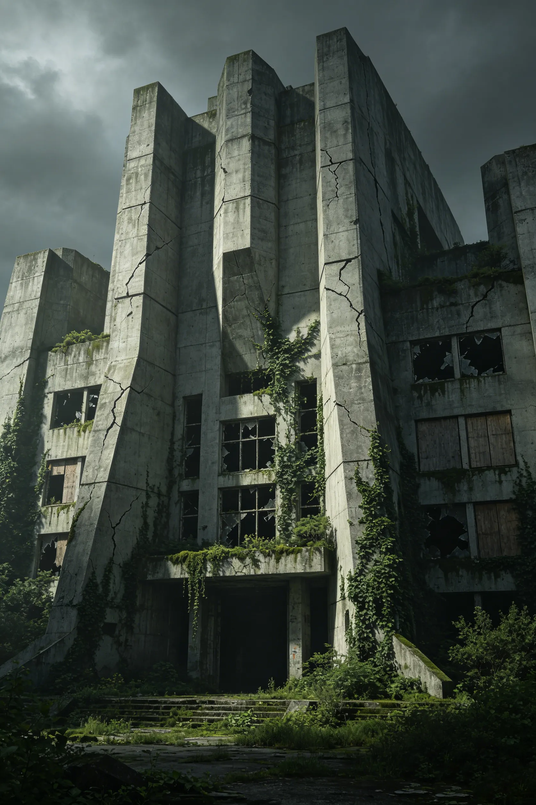
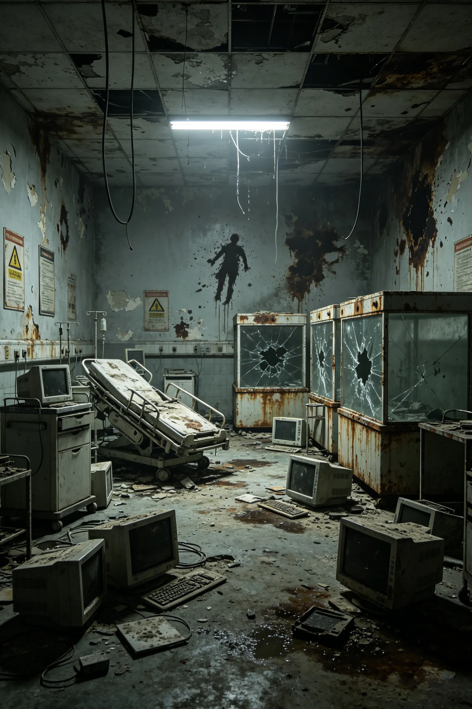
Image descriptions: Left — Gaia Center exterior, brutalist concrete, overgrown with vegetation, a sense of nature reclaiming cruelty. Right — interior corridor, overturned equipment, scorch marks, empty containment pods with broken glass.
Gaia Center is built like a bunker — thick concrete walls, narrow corridors, no windows. It was designed to keep secrets in. Now it is a tomb for those secrets. The environmental details are devastating:
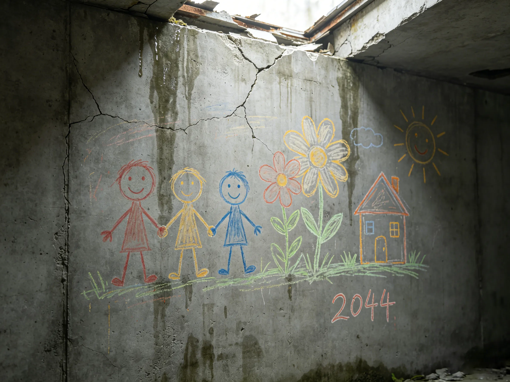
Figure 8: A detail that breaks the heart — crayon drawings of flowers on a containment room wall. A child tried to make this place less frightening.
Image description: Close-up of a concrete wall, faded crayon drawings of stick figures and flowers, the date "2044" written in childish handwriting.
MC and Xia Yizhou were both experimented on here. Walking through Gaia Center is walking through their shared trauma. The environmental storytelling forces the player to feel what they cannot say. The abandoned toys, the broken equipment, the walls that have been kicked and punched — every detail adds to the weight of what happened here. Gaia Center is not just a location; it is a character in the story, one that cannot speak but whose presence is felt in every scene that references it.
MC's room is the most intimate space in the game — and one of the most narratively rich. It is where players start each day, where messages are received, where the bond with characters deepens. The room's design has evolved over updates, but its core elements remain consistent.
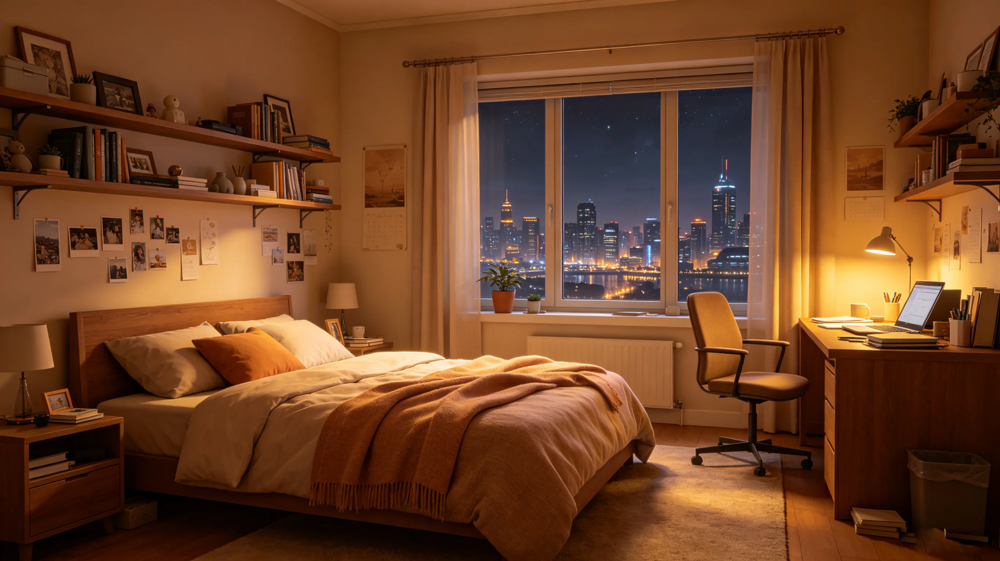
Figure 9: MC's room — warm, lived-in, full of memory. A sanctuary in a dangerous world.
Image description: MC's bedroom, warm amber lighting, a bed with soft blankets, a desk with personal items, windows showing the city skyline.
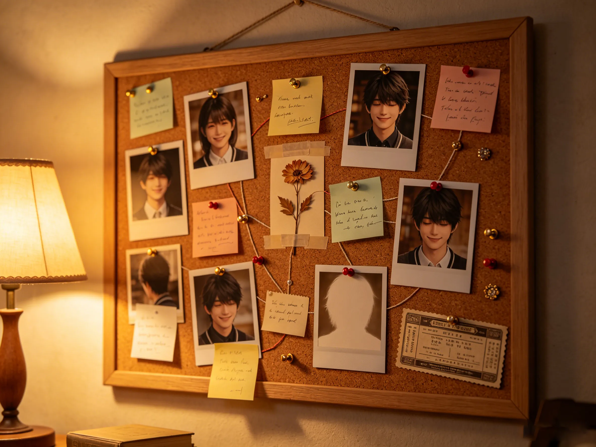
Figure 10: The corkboard — a map of MC's memories and relationships. Some photos are turned face-down.
Image description: Close-up of a corkboard, pinned photos of characters (some face-down), handwritten notes, a pressed flower, a train ticket.
The lighting in MC's room changes depending on the story context. During happy moments, the light is warm and golden. During sad or tense moments, it is cooler, dimmer. After traumatic events, the room feels empty even when nothing has physically changed. The designers use environmental cues to mirror MC's emotional state, creating a feedback loop between player and character.
Rafayel's spaces are the most emotionally expressive of all the male leads. His studio is chaotic, colorful, alive — a direct contrast to Zayne's sterile hospital or Xavier's sparse observatory. The Deep Sea Ruins, tied to his backstory as the Sea God, are melancholic, beautiful, and haunted.
Every surface is covered with art supplies. Canvases lean against walls, some finished, some abandoned mid-stroke. The color palette is warm — pinks, purples, golds. But there are also dark corners, shadows where unfinished work hides. The studio says: I am creative, but I am also haunted by what I cannot finish.
Image description: Rafayel's studio, messy but intentional, a canvas on an easel showing a half-finished seascape, paint on the floor, warm purple lighting.
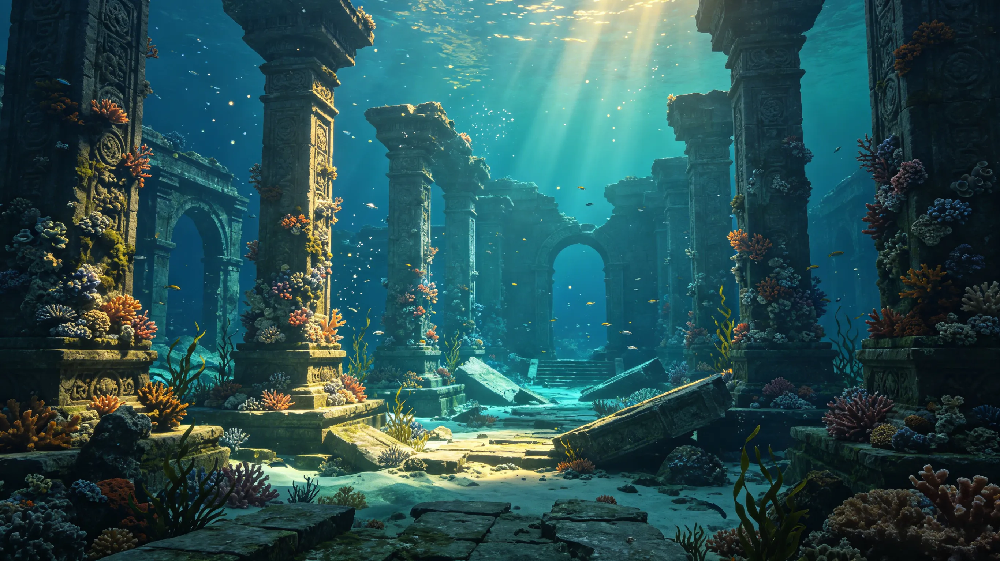
Figure 11: The Deep Sea Ruins — a lost kingdom beneath the waves, beautiful and sad.
Image description: Underwater ruins, crumbling pillars covered in coral, light filtering down from above, a sense of ancient grandeur now lost.
The ruins are where Rafayel's past as the Sea God lives. They are beautiful — filtered light, ancient architecture, sea life reclaiming stone — but they are also dead. No one lives here anymore. The civilization is gone. Rafayel visits the ruins in his memories, not in person. They represent what he has lost: a kingdom, a people, an identity. The ruins are melancholy made physical.
Xavier's observatory is the quietest space in Love and Deepspace. It is sparsely furnished, almost ascetic. The only significant features are the telescope, the star charts, and the windows — large, facing the sky. Xavier does not need much. He has waited two hundred years; material possessions have lost their meaning.
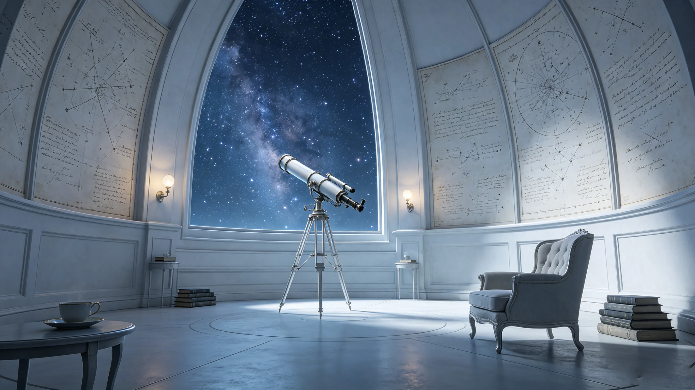
Figure 12: The observatory — Xavier's refuge, where he watches the stars he cannot reach.
Image description: A circular room, a large telescope pointing at a window showing the night sky, star charts on the walls, minimal furniture, soft blue-white lighting.
Figure 13: The telescope, the star charts, the annotations — two hundred years of watching.
Image description: Close-up of the telescope eyepiece, star charts on the wall behind, handwritten annotations faded with time.
The locations of Love and Deepspace are not just where the story happens — they are how the story is told. Through architecture, lighting, color, and environmental detail, the designers create emotional experiences that dialogue alone cannot achieve.
| Location | Dominant Color | Emotional Tone | Character Association |
|---|---|---|---|
| Tianxing City | Cool Blue | Controlled, Isolating, Impressive | Zayne, The Fleet |
| N109 Zone | Warm Red/Purple | Dangerous, Alive, Melancholic | Sylus |
| Deepspace Tunnel | Golden/Otherworldly)——Threshold, Terror, Wonder | Xavier, Wanderers | |
| Gaia Research Center}—冷白色/混凝土灰—Cruelty, Memory, Trauma}—MC, Xia Yizhou | |||
| MC's Room)—Warm Amber)—Safety, Intimacy, Memory)—MC (and all leads) | |||
| Rafayel's Studio—Warm Purple/Pink—Creativity, Chaos, Vulnerability)—Rafayel | |||
| Deep Sea Ruins—Blue-Green/Coral—Loss, Beauty, Ancient Grief)—Rafayel | |||
| Xavier's Observatory—Blue-White—Solitude, Patience, Longing)—Xavier |
Every location in Love and Deepspace is a character. They have personalities, moods, and arcs. They change as the story changes — Tianxing becomes colder after the truth about EVER is revealed, N109 becomes more dangerous as Sylus's power shifts, MC's room becomes lonelier after Xia Yizhou's return. The designers understand that place is not background; place is presence. And in a game about connection, presence is everything.
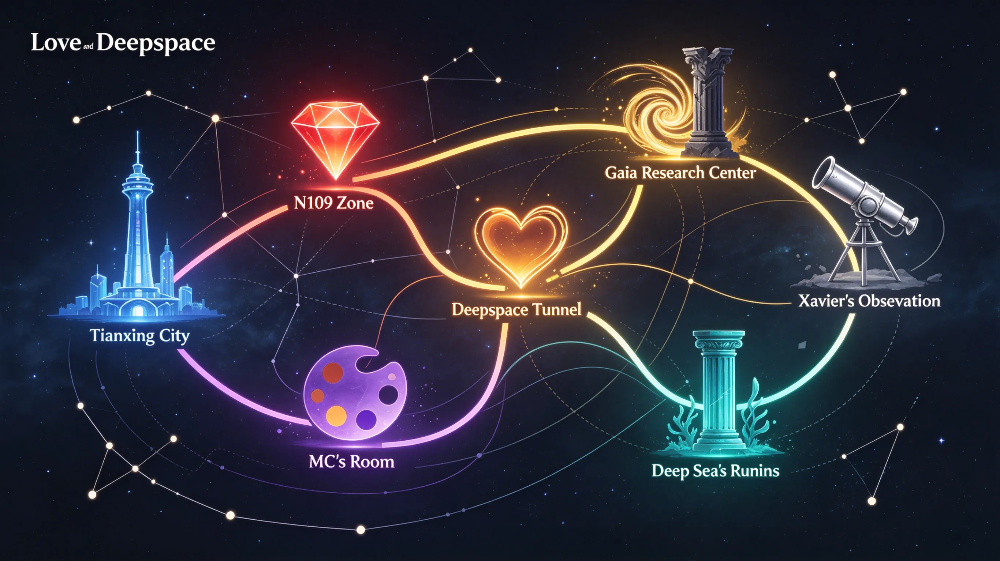
Figure 14: The player's journey through Deepspace — from Tianxing to N109 to the ruins to the observatory — each location leaving its mark on the heart.
Image description: An abstract map showing the relationship between locations, each represented by its dominant color and a small icon, paths connecting them representing the story's emotional arcs.
The worlds of Love and Deepspace stay with players long after they close the game. That is the mark of exceptional environmental design. We remember how Tianxing's blue lights made us feel small. We remember N109's red glow — dangerous and alive. We remember the golden terror of the Deepspace Tunnel, the heartbreaking crayon drawings on Gaia's walls, the quiet solitude of Xavier's observatory.
These places are not real, but the feelings they create are. And perhaps that is the true magic of Deepspace: it builds worlds so carefully, so intentionally, that we cannot help but believe in them — and in the characters who live there.